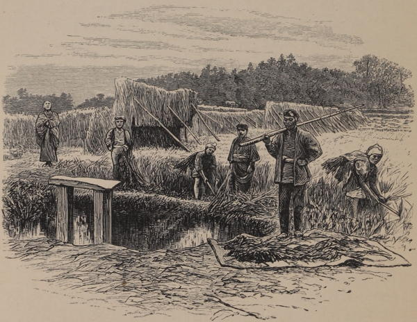

“Rice-cutting”
Japan: Its History, Traditions, and Religions (1880)
All along the route thus far pursued the country had been remarkable for the care and closeness of the cultivation, and we subsequently found that this continued all the way to the old city which we were seeking, and doubtless is a characteristic of Japanese agriculture, at least near the lines of the great high roads. It may be confidently said that the whole of the low ground, and most of the hillside, where not wooded, was cultivated as thoroughly as an English kitchen garden, throughout the journey from Osaka, by Sakai, to Nara.
Japan: Its History, Traditions, and Religions (1880)
The afternoon was far advanced before we had completed our researches in the vicinity of To-rin-gee [near Kanagawa], and therefore, bidding adieu to the priest and priestess, we took our departure, choosing, on our homeward journey, a different road from that by which we came. As this road led us through a number of highly-cultivated valleys, I noted the state of the crops. The low rice-lands were now covered with that grain, yellow, and nearly ready for the sickle. On all the higher lands the young wheat and barley crops were now (Nov. 10th) above-ground. The seed is not sown broadcast as with us, but in rows two feet three inches apart. It is dropped in the drills by the hand, in patches, each containing from twenty-five to thirty grains of seed, and about a foot from each other in the drill. The land is particularly clean, and the whole cultivation resembles more that of a garden than of a farm. ...
On the road-sides, and also in the little gardens of the farmers and cottagers, I frequently met with the tea-plant in cultivation. It was not cultivated largely in this part of the country, but, apparently, only in sufficient quantities to supply the wants of those around whose houses it was growing. Fruit-trees of various kinds were common also on the lower sides of these hills, and, generally, in the vicinity of the villages. Pears, plums, oranges, peaches, chesnuts, loquats, Salisburia nuts, and Diospyros kaki, are the most common fruit-trees of this district.
The vine in this part of the country produces fruit of great excellence. The bunches are of a medium size, the berries of a brownish colour, thin-skinned, and the flavour is all that can be desired. This grape may be valued in England, where we have so many fine kinds, and most certainly will be highly prized in the United States of America. ...
The winter vegetables met with were carrots, onions of several kinds, “lobbo” (a kind of radish), “gobbo” (Arctium gobbo), nelumbium roots, lily roots, turnips, ginger, Scirpus tuberosus, Arum esculentum, and yams.
Yedo and Peking (1863)
Besides rice, wheat, and other cereals, the tobacco plant, the tea-shrub, and the cotton plant are cultivated. Of other vegetable productions may be mentioned the camphor-tree, the paper mulberry, the vegetable-wax tree, and the lacquer tree. The principal timber trees are Cryptomeria japonica and Pinus massoniana; the maple is merely for ornament; chestnut, oak, beech, and elm are comparatively rare and little used. Fruits, as already mentioned, are abundant but for the most part of inferior quality. The floral kingdom is rich, beautiful, and varied, but most flowers, both wild and cultivated ones, are devoid of scent; those mostly met with are camellias, rhododendrons, peonies, chrysanthemums, wistarias, convolvuli, the large, showy, wild hydrangeas, irises, arum-lilies, and the lotus flowers.
Japan As I Saw It (1912)
Then we turned back to our hotel, visiting on our way one of the many market gardens which supply Yokohama with flowers. No such thing as artificial heat, but these clever people somehow manage to have flowers all the year round; by making pits open to the sun and covering them up at night with mats, they get warmth. Now, with frost every night, it is the season for fruit blossoms, and the rooms are decorated with branches of double plum and peach, which, put into water when in bud, continue to blossom for ever so long. But the prettiest flower decoration is a little old fruit tree with black gnarled stem two or three feet high, uprooted and thrust into a dragon-painted pot of delightful blue china, and then forced into bloom. All sorts of shrubs and fruit trees are grown in all sorts of grotesque ways. The effect is charming; but the process of gardening, digging up the shrubs and chrysanthemums without in the least injuring them, and growing camellias from cuttings in the open ground as we do laurels, we cannot understand. We saw a camellia tree twenty feet high, this frosty day being transplanted in full bloom; these people do anything with shrubs we dare not touch, in a climate much like our own.
Journal of a Lady’s Travels Round the World (1883)
The question of agriculture in Japan is a vexed and vexing problem. Improved methods and implements would do much undoubtedly to ameliorate the condition of the farmer, but the small farmers are too poor to avail themselves of the improvements of modern science. It may be that, as a consequence of the wide fields opening for Japanese enterprise, the peasant-proprietors will disappear altogether and the capitalist landowners develop into a class of landed gentry with means at their disposal for the adoption of improvements. But this would entail a great change of the spirit of Old Japan.
Every-day Japan (1909)
◀ IndustryModernization ▶